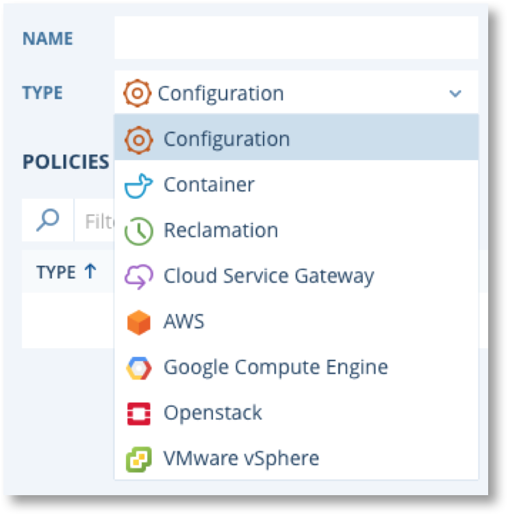
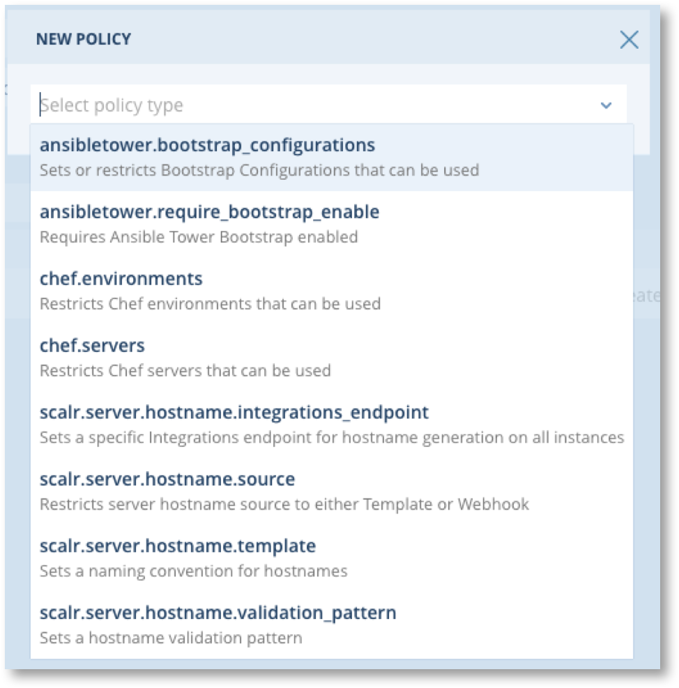
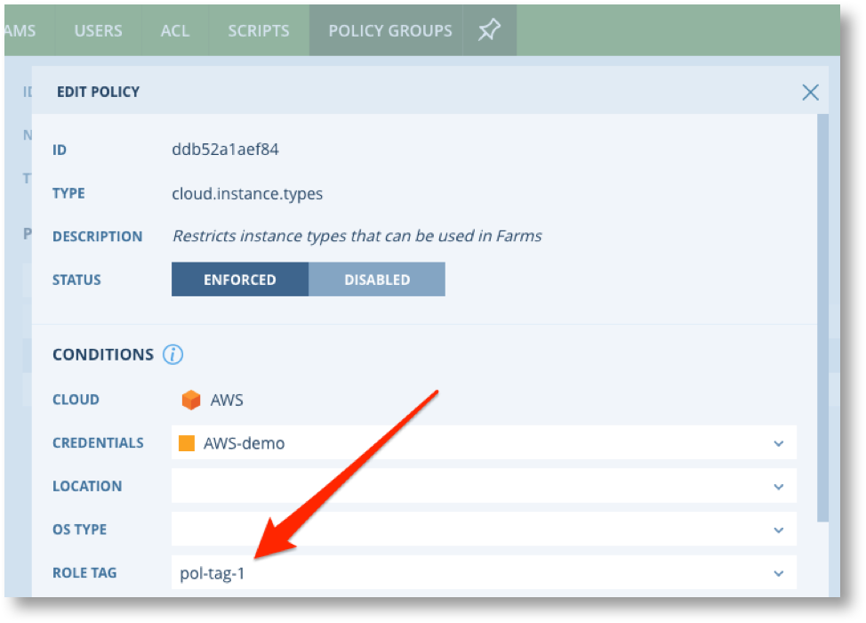
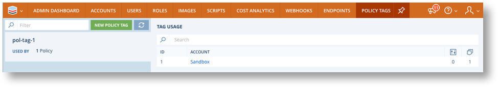

Policy Engine¶

The Policy Engine is part of the Account Scope, thus enabling business units to implement consistent governance policies across all their cloud environments.

There are three steps to defining and enabling policies.
- Create a Policy Group.
- Add Policies and policy conditions to the Policy Group.
- Link the Policy group to the required environments.
Policy conditions provide fine grained control over the application of a policy, allowing for policy variations across different clouds, locations, accounts and more. Scalr also provide the ability to implement policies based on Policy Tags.
Creating Policy Groups¶
Policies are defined by clicking on Policy Engine -> Policy Groups -> NEW POLICY GROUP which will display this screen.

Policy Groups require a Name and Type. The Type determines the options available for Policy Rules and includes types related to all clouds and cloud specific types. Cloud specific types will only appear in the drop down if there are Cloud Credentials configured for that cloud at either the Scalr scope or in the currently active Account.
{kind=link}
The Policy Reference below explains the policy types and their associated rules.
Creating Policies¶
Click on “New Policy” to add a policy rule. Policies available to the chosen Policy Group type will be displayed. This example show “Configuration” policies.
{kind=link}
Note
For type type “Reclamation” there are no further options and you will be taken straight to the screen to configure the reclamation policy. 
Click a policy and you will be presented with a screen specific to that policy on which you can set policy conditions and details of the policy itself. This is an example of scalr.server.hostname.template policy.

All Conditions are optional.
Make sure the status is set to “ENFORCED” to enable the policy.
After defining the policy you can add further policies to the policy group. Remember to click “Save”  .
.
Using Global Variable in Policies¶
Global Variables in Policies make it possible to vary the details of the Policy at any level where Global Variables can be set. A good example of this is a policy that enforces tagging on servers. The cloud.tags policy is available for all cloud types and provides a list of tags that must be applied to servers from every Farm Role the policy applies to. In this example the policy effectively applies to all Farm Roles in all environments the Policy Group is linked to.
{kind=link}
By using a Global Variable name (in this example. {MyGlobalVariable}) rather than an actual value, the value applied to the tag will be determined from the Global Variable at the time the server is launched, based on the value of the variable at that time. Depending on where the variable is defined and it’s permissions the value could be set as low down as the Farm Role scope.
For more details see Global Variables.
Policy Tags¶

Policy Tags provide fine grained control over which Roles a policy will apply to. Policy Tags are defined by the Scalr Administrator at Scalr scope and can be applied to Policies and Roles to determine which Roles a Policy applies to. Policy Tags must be defined at the Scalr scope BEFORE they can be used in Policies at the Account scope.
Note
Policy Tags are entirely separate for role tags. Although Policy Tags are applied to Roles in the same way as normal role tags it is NOT possible to use existing role tags as Policy Tags. You must define new Policy Tags for this purpose.
To create Policy Tags login as the Scalr Admin at Scalr Scope and navigate to Policy Engine -> Policy Tags. Click on NEW POLICY TAG and enter a name for the tag.


To apply Policies Tags to a Policy include these in the conditions of the policy.
{kind=link}
Back at Scalr scope under Policy Engine -> Policy Tags you will be able to see which accounts are using each Policy Tag.
{kind=link}
Linking Policy Groups to Environments¶
Policy Groups will only take effect when they are linked to Environments. You can only link one Policy Group of each type to an Environment.
Click on ENVIRONMENTS in the Bookmarks Bar or Main menu and select the environment you wish to link Policy Groups to.

Click on the link icon on the right-hand side, link the required Policy Group to the environment, and save.

Policy Reference¶
Configuration Policies¶
| Type | Description | Notes |
|---|---|---|
| scalr.server.hostname.source | Enforces a source for the computation of the Servers hostnames. This policy is commonly used in conjunction with a Hostname Template policy or a Hostname Webhook endpoint policy. | Affects the Network Tab of Farm Roles in the Farm Designer. If you activate this policy, the Server Hostname Source will no longer be customizable in the Network Tab. |
| scalr.server.hostname.template | Enforces a custom Hostname Template for your Servers. Enter the Hostname Template here, and Scalr will use it to generate the hostname for your Servers | Affects the Network Tab of Farm Roles in the Farm Designer. If you activate this policy, the Server Hostname Template will no longer be customizable in the Network Tab. |
| scalr.server.hostname.integrations_endpoint | Enforces a given Webhook endpoint to retrieve the hostname of your Servers from. Select an endpoint from the list of configured endpoints, and Scalr will use it to generate the hostname for your Servers | Affects the Network Tab of Farm Roles in the Farm Designer. If you activate this policy, the Server Hostname Webhook endpoint will no longer be customizable in Network Tab. |
| scalr.server.hostname.validation_pattern | This policy creates a validation pattern for hostnames. If the hostname generated for a Server does not match the validation pattern, Scalr will abort the provisioning of the Server. | Validation patterns are defined as Regular Expressions (REGEX). |
| chef.servers | Enforces the use of a specific Chef Server to configure cloud severs. | |
| chef.environments | Enforces the use of a specific Chef Environment to configure cloud severs. | |
| ansibletower.bootstrap_configurations | Enforces the use of a specific Ansible Tower Bootstrap Configuration to configure cloud severs. | AT Bootstrap config must have previously be defined at Scalr or Account scope. |
| ansibletower.require_bootstrap_enable | Enforces the use of an Ansible Tower Bootstrap Configuration. | Force the Bootstrap Ansible Tower on the FarmRole Scope. When creating a farm with FarmTemplate, all the Farm Roles without Bootstrap Ansible Tower enabled will be ignored. |
Container Policies¶
| Type | Description | Notes |
|---|---|---|
| docker.container.privileged.escalating_exec_usage | Limit exec and attach commands to privileged containers. | |
| docker.container.privileged.usage | Limit privileged containers usage | |
| docker.image.sources | Restricts Docker to using specific registries | |
| docker.network.ports | Limits the Network Ports that can be opened on a container | |
| docker.volume.mounts | Limits which volume mounts can be usd inside a container. |
Reclamation Policies¶
Reclamation policies enforce automatic termination of Farms after specified periods. This helps to ensure unwanted servers are not running up costs after they are no longer required. Admins can set Reclamation policies on typically fixed duration environments such as QA testing, short term projects etc. Reclamation polices define 3 things.
- The duration of a Farms running lifetime.
- Notifications to be sent prior to automatic termination.
- Maximum number and duration of lease extension requests a Farm owner can make (Standard Requests).
Note
Farm owners can make Non-Standard Lease Extension requests. Standard requests are considered pre-approved and will come into effect immediately. Non-standard requests must be approved by the Account Admin before they will come into effect.
Cloud Service Gateway Policies¶
| Type | Description | Notes |
|---|---|---|
| csg.resource.name.prefix | Enforces a required prefix for available resource properties of resources supported in CSG | |
| csg.resource.name.validation_pattern | Template for validating the available properties of the resource cluster supported by CSG |
Cloud Generic Policies¶
| Type | AWS | GCP | Azure | OpenStack | VMware | Description | Notes |
|---|---|---|---|---|---|---|---|
| cloud.instance.name.template | X | X | Enforces a format for inatance names. | ||||
| cloud.instance.types | X | X | X | X | X | Limits the available instance types | If only one instance type is allowed the instance type drop down in the Farm Designer and Service Catalog will be disabled. |
| cloud.locations | X | X | X | X | X | Limits the cloud locations that available | If only one location is allowed the instance type drop down in the Farm Designer and Service Catalog will be disabled. |
| cloud.networks | X | X | X | X | X | Limits the specific networks that can be used | Some conditions are madatory for this policy, such as Credentials and Location for AWS. |
| cloud.resource.name.prefix | X | Mandatory prefix for cloud resources. | Cuurently only applies to AWS resources in ELB, RDS and S3. | ||||
| cloud.resource.name.validation_pattern | X | This policy creates a validation pattern for resources. If the name for a resource does not match the validation pattern, Scalr will abort the provisioning of the resource. | Validation patterns are defined as Regular Expressions (REGEX). Cuurently only applies to AWS resources in ELB, RDS and S3. | ||||
| cloud.security_groups | X | X | Sets or Restricts Security Groups that can be used. | Affects Custom and System Security Groups. Unless you select the “Allow user to specify additional security groups” option, Custom Security Groups are disabled for your Farm Roles. In any case, System Security Groups are disabled. | |||
| cloud.ssh.key_pair | X | X | Sets the SSH Key pair to be used. | ||||
| cloud.storage.maximum_size | X | X | X | X | X | Enforces a maximum size for storage volumes in GB | |
| cloud.storage.volume_types | X | X | Enforces limitations allowed volume types | ||||
| cloud.subnets | X | X | X | X | X | Limits the specific subnets that can be used | Some conditions are madatory for this policy, such as Credentials and Location for AWS. |
| cloud.tags | X | X | X | X | X | Ensures the tag(s) are added to servers | Note that the actual tag name can be specified via a Global Variable, thus, with tge required permissions, the name can be defined down at Farm Role Scope. In this form the policy simply ensures that a tag of any name is applied. |
AWS Policies¶
| Type | Description | Notes |
|---|---|---|
| aws.iam.instance_profiles | Restricts IAM instance profiles that can be applied to instances | |
| aws.kms.keys | Restircts the KMS keys that can be used for encrypting storage | This does NOT enfiorce encryption, it only limits the KMS keys that can be used. |
| aws.network.require_vpc | Enforces the use of VPC’s | AWS Classic will not be availble. |
| aws.network.subnet_type | Restricts subnets available to the specified types, i.e Public or Private | Note this is an Either/Or selection. |
| aws.rds.instance_types | Restricts the instance types available for RDS database instances | |
| aws.rds.instance.require_multi_az | Requires RDS to be deployed in multiple AZ’s for resilience | |
| aws.storage.require_encryption | Enforces encryption of EBS volumes.. |
Azure Policies¶
| Type | Description | Notes |
|---|---|---|
| azure.network.public_ip_usage | Enforces or Prevents public IPs on Servers | |
| azure.resource_groups | Restricts Resource Groups that can be used | |
| azure.storage_accounts | Limits the storage accounts that can be used | |
| azure.availability_sets | Limits the availability sets that can be used |
Google Compute Engine Policies¶
| Type | Description | Notes |
|---|---|---|
| gce.custom_instance_type.maximum_ram | Imposes and upper limit RAM for custom instance types | |
| gce.custom_instance_type.maximum_vcpus | Imposes and upper limit vCPUs for custom instance types | |
| gce.network.public_ip_usage | Enforces or Prevents public IPs on Servers | |
| gce.network.tags | Defines a list of allowed network tags | |
| gce.service_accounts | Defines a list of allowed service accounts |
Openstack Policies¶
| Type | Description | Notes |
|---|---|---|
| openstack.network.floating_ip_usage | Enforces or Prevents floating IPs on Servers | |
| openstack.network.floating_ip_pools | Limits the use of IP Pools |
VMware Policies¶
| Type | Description | Notes |
|---|---|---|
| vmware.compute_resources | Restricts Compute Resources that can be used | |
| vmware.resource_pools | Restricts allowed resource pools | |
| vmware.folders | Restricts allowed Folders | |
| vmware.storage.placements | A combined list of Datastore and Datastore Cluster that are available for use | |
| vmware.custom_specs | Restricts allowed Custom Specs | |
| vmware.host_systems | Restricts allowed Host Systems | |
| vmware.network.ip_pools | Restricts allowed IP Pools | |
| vmware.network.ip_pools_usage | Enforces or Prevents the use of IP Pools | |
| vmware.storage.provisioning_type | Restricts the provisioning types, e.g. Thikc, Thin, how to zero etc. |